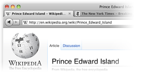
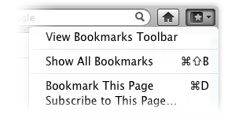
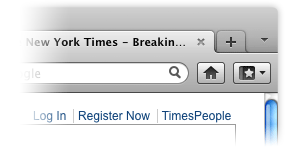
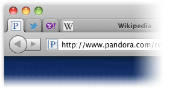
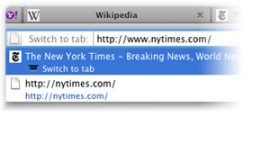
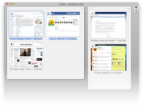
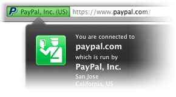
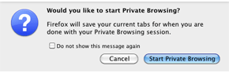
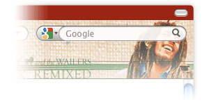

瀏覽變得簡單
智慧網址列
快速抵達您最愛的網站，就算是您不記得網址也好。在網址列（又稱 Awesome Bar，智慧位址列）輸入詞彙，自動完成功能將會自您的瀏覽紀錄、書籤當中的網站，以及開啟分頁當中搜尋並顯示可能符合的結果。
智慧位址列會隨時跟著您的使用自我學習，它會調整自己以適合您的偏好並提供更好的答案。我們已將它調整成讓您可以更好地控制結果（包含隱私設定），並加強校能，讓您可以更快地找到所需的結果。
介面改善
我們一直在尋找能讓您更輕鬆有效率進行瀏覽的方法。
閱讀我們最新的改善:
標籤列置頂
分頁標籤位於智慧位址列之上，讓您可以更簡單地聚焦於您所開啟的網站內容。
Firefox 按鈕 (Windows 與 Linux)
您所有的選單項目現在都在一個小按鈕當中，讓您可以更快使用。

書籤按鈕
用一個按鈕就能管理您的書籤。不需要跳入泥淖就能找到您最愛的鏈結！
簡化的重新載入/停止按鈕
您的智慧位址列現在只需要一個簡單的按鈕就能自動判斷是要停止或重新載入頁面。

首頁按鈕
首頁按鈕已被移動到搜尋框的右邊。
分頁標籤
一次簡單而方便地瀏覽多個網站。每個新網站都會在新標籤（而不是新視窗）中開啟
而且只需滑鼠一點就能存取。
應用程式分頁標籤
讓您總是開啟的網頁（像是網路郵件）離開分頁標籤，並提供他們一個永久的家。
重新開啟已關閉的分頁與視窗
若您不小心關掉了某個分頁或視窗，您只需要滑鼠一按就能重新開啟。只要檢視歷史選單當中的最近關閉的分頁或最近關閉的視窗項目，就可以把要重新開啟的項目開回來。
切換到分頁
當您正要開啟新分頁或於智慧位址列輸入時，Firefox 將會檢查您是不是已經開啟了這個網頁。如果已經開啟了，將會直接帶您檢視該分頁，這樣就不用重複開啟了。
簡單滾動分頁標籤
想要把您最愛的 20 個網頁一次打開嗎？有個好用的新功能可以讓您滾動分頁標籤，這樣就可以簡單地看到所有的標籤並快速存取您想要的那一個。
使用分頁群組管理您開啟的分頁
開了太多個分頁了嗎？從混亂的分頁當中找回您的瀏覽器吧！分頁群組讓您可以拖放您的分頁標籤，變成可管理的群組，這樣您就可以用好玩且視覺化的方式整理、命名，並排序分頁標籤。若要開始使用，只要在您自訂瀏覽工具列時選擇分頁群組圖示，或是對任何分頁標籤按右鍵，並選擇移動到群組。
保持同步
無縫同步您的桌上型電腦與行動裝置當中的 Firefox，這樣您就可以在所有的裝置間存取您的瀏覽紀錄、已存密碼、書籤，甚至是開啟的分頁。自您第一天開始使用行動裝置就可以存取您多年以來的瀏覽紀錄，並使用您電腦上儲存的密碼已在手機上填入表單。
您現在可以透過桌機上網，瀏覽到一半時離開座位，您會發現剛剛開啟的分頁標籤已經在手機上等著您了，就跟剛剛離開時一模一樣。您的瀏覽方式將不再一樣！了解更多關於同步功能的資訊 或 為您的手機下載 Firefox。
密碼管理員
厭倦了每次登入某個最愛的網站都要把密碼背起來然後重新輸入嗎？Firefox 在此幫助您！您在第一次登入時將會不受干擾地被提示是否要記得密碼，在此之後，您就可以通通交給 Firefox。
完成表單
當您正要填寫像是寄送地址的某張線上表單，Firefox 將會透過您以往在表單上填寫的類似欄位資訊來建議您每個欄位要填什麼。對要重複輸入一樣的答案覺得厭煩嗎？您將可以在一瞬間解決這些表單！
彈出型視窗阻擋器
讓彈出型視窗從您的上網體驗消失吧。或是找個快樂的媒體，選擇檢視被封鎖的彈出型視窗或是建立可以彈出視窗的白名單。
簡單搜尋
網路是個大地方，但 Firefox 已經準備好要幫助您搜尋想找的東西。
整合網路搜尋
透過在位置列右邊的搜尋框來搜尋網頁非常簡單。選擇想使用的搜尋引擎並輸入要搜尋的詞彙。搜尋框如果不夠大，您也可以調整寬度。
搜尋建議
開始在搜尋列裡面輸入，它將會提示您建議的關鍵詞，另外您也可以使用搜尋列作為計算機、單位換算器，以及其他功能。
數以百計的搜尋引擎
從預設清單選擇搜尋選項，或選擇「管理搜尋引擎」以瀏覽許多與搜尋相關的附加元件。看看有什麼選擇。
智慧關鍵字
透過智慧關鍵字來創下搜尋速度的世界紀錄。點幾下滑鼠，您就可以對搜尋引擎指派關鍵字，然後只要在網址列輸入您的關鍵字與搜尋單字就可以開始搜尋。幫 Amazon.com 設定一個「books」的關鍵字，這樣您就可以輸入「books about home building」來進行搜尋，不必先進到 Amazon 的首頁。
地理感知瀏覽
需要知道哪條路怎麼走，或是附近有什麼好吃的嗎？Firefox 可以告訴您的網站您所在之處，您就可以取得最有用的資訊。瀏覽器將不會在您未允許的情況下分享您的所在之處，您的隱私是最優先的選項。
回復瀏覽狀態
回復瀏覽狀態可以把您的視窗、分頁標籤、已經輸入的文字，以及正在下載的檔案帶回來。您可以在安裝附加元件或軟體更新後重新啟動瀏覽器，正在開啟的網頁不會不見。若 Firefox 或您的電腦突然關掉了，您也不用花時間救回資料或是重作您在網頁上做過的動作。若您正在打一封電子郵件，您可以從斷掉的地方繼續輸入。
拼字檢查
內建的拼字檢查工具會直接在像是貼部落格或寫信的時候工作。您再也不用擔心有沒有打錯字。
整理您的資料
網路上有超多超棒的東西，Firefox 有許多不同的方式可以幫助您整理您的資料。
一鍵加入書籤
您只要點一下網址列尾端的星星圖示就能把某個網站加入書籤，碘兩下就能選擇要把這個網站存到哪裡、要加上什麼標籤。被書籤的網站會被存放於可以簡單使用的資料夾並可以依照情境（像是「找工作」、「最愛的購物網站」）來整理。您可以直接在網址列輸入標籤、網頁名稱或書籤名稱來搜尋您已加入書籤的網站。您使用了越多標籤與書籤名稱，系統就能越適合您的使用習慣。
標籤
幫網站貼上名字或分類等，讓您覺得有用的標籤。舉例，您可以幫 www.bbc.co.uk 與 www.nytimes.com 都加上「新聞」這個標籤。當您在網址列輸入「新聞」的時候，兩個網址都會在結果當中出現。一個網站也可以同時擁有多個標籤，您也可以建立無限多個標籤。您可能不記得某個網站的網址是什麼了，但只要透過標籤，您可以簡單地找到這個網站。
收藏庫
讓您的瀏覽器跟您所想像中的一樣有效率。您的瀏覽紀錄與書籤都被封存於收藏庫當中，您可以簡單地搜尋與整理這些資訊。在您的書籤清單跟瀏覽紀錄越來越大的同時，您可以把您最常搜尋的東西存放在自動更新的智慧資料夾當中。
搜尋
只要用一組按鍵就能開始搜尋。您可以在開啟的網頁當中搜尋某個字詞，並且用高亮度標示所找到的文字。
RSS 消息來源閱讀工具
花了好多時間在網路上尋找最新的新聞嗎？您只需要在工具列新增一個 RSS 消息來源的圖示，並透過線上服務建立消息來源後就可以使用閱讀軟體或 Firefox 的即時書籤進行閱讀。
下載管理員
無縫且安全地下載檔案！暫停和恢復下載的可以讓您隨時停止或是再開始下載。當您正下載某個大檔案到一半，但得去趕公車的時候，只需要按下暫停，然後稍後再繼續從斷掉的地方繼續下載即可。繼續下載功能也能在您的電腦當掉或突然重開機後能使用。管理員可以顯示您目前的下載進度，也能讓您透過檔名或下載網址來搜尋您的檔案。
離線瀏覽
在您電腦不在線上時也能留下您的資訊。某些網站可能允許應用程式（像是網頁郵件）可以隨時跟著您。
完整縮放
想要把文字與照片看得更清楚？一個全新的縮放功能可以讓您一舉看清網頁上的詳情，網頁上的所有元素都會依比例同步放大。
自然的外觀與感覺
Firefox 平台看起來就跟在家裡一樣。請想像 Firefox 是一個很會交朋友的人，不論您使用的是 Windows 7、Mac 或 Linux，這套瀏覽器都能無縫地整合進您的環境當中。
Firefox 技術支援
需要幫忙？我們的 技術支援網站 有一個可搜尋的技術文件知識庫，還有討論區與能讓您有更好體驗的小秘訣與教學，讓您能有更好的體驗。
更佳效能
Runfield 是一個使用 JavaScript 與 Canvas 打造的網頁遊戲。玩玩看 »
速度超快
透過更快的啟動時間、快速的圖形運算描繪，以及更佳的頁面載入時間，Firefox 4 擁有您一定能馬上發現的效能改進。從整合了隔離不同網站的 JavaScript 到更有效率地管理 JavaScript 物件以支援 ECMAScript5 以及打造出全新的 JägerMonkey JavaScript 引擎，我們努力地讓這個版本的 Firefox 變成有史以來最強大的版本。
硬體加速
請體驗以圖層為基礎的圖形與視訊加速，此技術在 Windows 上使用了 Direct2D 與 Direct3D；在 Mac 上使用了 OpenGL。
錯誤保護
Firefox 讓您能在 Adobe Flash、Apple QuickTime，或 Microsoft Silverlight 等外掛程式造成錯誤之後也能不中斷您的瀏覽。若這些當中的某個常用外掛程式造成錯誤或軟體當掉，也不會影響其他部分的 Firefox。您只要重新載入頁面，就可以重新載入這些外掛程式並再試一次。了解更多關於外掛程式的資訊。
真實的效能
擁有一個超快的 JavaScript 引擎非常重要，但因為這些改進通常是以毫秒為單位作計算的，有些時候更重要的是在瀏覽器本身而不是您的感覺。這就是我們為什麼要持續最佳化 Firefox，讓您可以更好的使用網路 – 像是能更快地開啟分頁，或是更快就能得到智慧位址列的結果，讓您能更快、更簡單地到達您想要去的地方。
網頁上的 3D
WebGL 將 3D 圖形帶到了 Firefox，為開發者開了一個大門來建立生動的遊戲與全新的網路視覺體驗。
進階安全性
即時網站識別資訊
在您下單購物前想更確認這個網站是不是正確的網站？點一下網址前的圖示就能取得該網站的即時身分資料。再點一下可以看到更多資訊：您來過幾次？您有存下此網站的密碼嗎？請檢查可疑的網站，避免假造的網頁並確認這網站到底是不是所宣稱的那個網站。
內容安全政策
Firefox 的內容安全政策是透過一種機制，讓網站告訴瀏覽器什麼資料是合法資料的方式來避免跨網站指令碼的攻擊。瀏覽器可以自動無視未被網站背書的資料，讓您在處理過程中保持安全。
自訂安全設定
控制 Firefox 仔細檢查網站的等級。您甚至可以設定例外，不必盤問某些網站。自訂關於密碼、Cookie、載入圖片，以及安裝附加元件的設定，以得到完全授權的上網體驗。
家長監護
套用您在 Windows 7 設定的家長監護設定以停止不想要的下載項目，以及其他內容。
安全地更新
Firefox 在安裝或更新附加元件、第三方軟體，以及 Personas 之前，會先看看是否可以使用安全連線。
私密瀏覽
有時最好還是找個隱蔽處：打開這個功能並保護您的瀏覽記錄。您可以快速地切換私密瀏覽模式，所以您可以很簡單地回到您原本所開的網頁，彷彿什麼事情都沒發生過。此功能適合用於您在公用電腦轉帳，或是在網咖的電腦收信的時候使用。
防毒軟體整合
Firefox 優雅地整合了您的 Windows 防毒軟體。當您下載檔案的時候，您電腦當中的防毒軟體將會自動檢查，以保護您避免受到病毒與其他惡意程式的攻擊。
反釣魚
安全地於網際網路買東西或是進行交易。Firefox 一天會更新釣魚網站的資訊高達 48 次，所以若您試著要打開一個假裝是您所信任的網站（像是銀行）的時候，在傷害造成前會先給您一個警告訊息。
清除近期記錄
只要幾個步驟就能清除您所有的隱私資料或是您幾小時前剛上過的網站。您有要刪除什麼的完整控制權，您留下的資料也會從您的私人電腦或圖書館的公用電腦完全消失，就是這麼簡單。
反惡意程式
Firefox 保護您避免受到病毒、蠕蟲、特洛伊木馬，以及網路上的惡意軟體的影響。若您不小心打開了某個攻擊網站，將會警告您並告訴您為什麼那個網站不安全。
不要追蹤我
許多網站會追蹤您的線上行為並把資料賣給廣告商。若這會讓您覺得不舒服，Firefox 可以讓您告訴網站您不想被追蹤行為，並保持隱密您的瀏覽習慣。
忘記此網站
對您去過的某個網站有二心嗎？移除您來過這裡的蛛絲馬跡！
網頁連線加密
Firefox 能透過自動對提供 https 連線的伺服器啟用安全連線避免攻擊者擷取您的敏感資料。
偵測過期的外掛程式
外掛程式是一些簡單的第三方軟體，由第三方公司像是 Adobe Systems 或 Apple 所製作，幫助增加視訊、動畫，與遊戲功能。當他們過時的的時候會有很高的安全性風險，所以我們打造了一個簡單的工具，讓您可以隨時檢查現在是否正使用最新版的外掛程式。檢查您的外掛程式。
強大的個人化
附加元件管理員
附加元件管理員已經被重新設計成可以讓您不需要離開 Firefox 就能探索並安裝附加元件。瀏覽附加元件的評分、推薦、說明，與照片幫助您做選擇。您的附加元件管理員還可以讓您只要點幾下就能檢視、管理和停用第三方外掛程式，也可以在您打開管理員之後檢查並自動更新您的每一個附加元件。
使用 Personas 妝點您的 Firefox
透過 Personas 幾乎能完全修改您 Firefox 的外觀：由全世界的使用者所創造（您也可以自己做一套！），數以千計能簡單安裝的佈景主題。只要簡單一點，您就可以用簡單的設計、彩色的圖案，還有由合作夥伴所提供的像是哈利波特還有 Bob Marley 等佈景主題妝點您的 Firefox。
可自訂介面
每個人都喜歡用自己的方式瀏覽網頁，所以我們讓您可以很簡單的讓您可以用您喜歡的方式調整 Firefox 介面：透過重新安排、調整、新增或移除按鈕或欄位來調整您的瀏覽體驗。您只需要在瀏覽工具列上按右鍵，並選擇自訂選項就可以開始調整。
自訂 Firefox 的十萬種方法
天空的極限位於隨時都在成長中的數以千計的 Firefox 附加元件，一些小小的附加元件讓您可以下載並安裝，把瀏覽器變成您所想要的樣子。您可以透過瀏覽器管理線上拍賣、上傳數位照片、一瞥看過天氣預報，或是聽聽音樂。若您不知道要從何下手，可以看看我們有哪些熱門附加元件。
在附加元件之外
附加元件是自訂功能的基石，但讓 Firefox 符合您的使用習慣不會僅止於此。您可以新增搜尋引擎、修改工具列偏好設定、顯示不同尺寸、形狀與樣式的導覽按鈕。透過外加的偏好設定，您可以指定當您點下網頁上的電子郵件地址時透過網頁郵件（像是 Gmail）來開啟鏈結，或是透過新聞閱讀應用程式來打開您遇到的部落格。
尖端技術
最新的網頁技術
網站作者與開發者將會愛上 Firefox 全新與增強後的功能。若建立進階內容與應用程式能讓您開心，Firefox 就是您最好的選擇。看看我們的 功能比較表 以了解更多資訊。
SPDY
SPDY 是一個協議，設計的宗旨是用來接替 HTTP，可以有效減少網頁載入時間。當您開啟支援 SPDY 的網站，您可以感受到載入速度明顯變快。SPDY 也會透過 SSL 加密所有通訊，讓您的 Firefox 用起來更加安心。
WebSockets
WebSockets 讓 Firefox 與網頁伺服器間的即時雙向溝通變得可能。開發者將可以打造比起以往更即時回應與更有互動性的訊息應用程式，以及 HTML5 網頁遊戲。
表單升級
讓麻煩的表單開發過程變成過去式。Firefox 整合的表單功能，提供了像是清單屬性與 HTML 驗證等您所需要的工具。
剖析器
Firefox 包含了一個已經支援 HTML5 的剖析器。這個剖析器帶來了一些 全新功能，尤其是行內 SVG，同時也透過讓其自己的處理器執行剖析演算法來增加效能。
IndexedDB
Firefox 包含了一個早期版本的 IndexedDB 讓開發者可以嘗鮮，並實驗瀏覽器的本機儲存功能。
下一代圖形
眼見為憑！歸功於全新升級的圖形引擎，文字與圖形描繪的速度，包含 SVG 與 Canvas，較相以往更快、更銳利。Firefox 可以對影像自動校正（例如相機照片），確保色彩與原始資料一致。
程式碼片段速記本
一套全新的內建開發者工具，程式碼片段速記本，讓您可以直接在瀏覽器內撰寫並測試 JavaScript 程式碼片段，節省您的時間與寶貴的按鍵次數。
WebM 與 HD 影片
作為 HTML5 視訊標準的先鋒，Firefox 也支援 WebM 格式，您可以觀賞開放的高解析度影片。
更強的檔案 API
透過檔案上傳控制元件新增支援的 .click()、.slice 與檔案 API 網址，Firefox 允許開發者可以更好地控制檔案上傳過程的體驗。
使用 CSS3 美化網頁
支援像是 border-radius、box-shadow，以及其他的轉場與變形特效 等全新 CSS3 功能讓您可以簡單地為網頁加上美觀地動畫效果。
音訊 API
Firefox 正在改變媒體整合進網頁的方式。HTML5 讓開發者可以很簡單地透過 JavaScript 來存取音訊資料。我們已經露出了音訊的原始資料，所以您也可以建立超棒的聲效！
多點觸控支援
Firefox 已經整合了 Windows 7 的多點觸控功能，讓您可以用全新的方式與您的瀏覽器互動。
普及近用
優秀的字體表現
Firefox 支援像是 WOFF、TrueType、OpenType 的開放字體格式，代表網站設計師再也不需要在建立網站時被限制於一些少數可用於網頁的字體。因為 Firefox 堅信就算是您沒有安裝該字體，仍然應該正確地顯示並被描繪出來。您可以在瀏覽時檢視許多不同的字體。
Firefox 的語言
Firefox 會說的語言比世界上任何一種瀏覽器還要多。因為網路是一個由所有人所共享的開放資源，我們讓瀏覽器盡可能以最多的語言推出。我們目前已有超過 75 種不同的翻譯版本，從法文、中文到芬蘭文與捷克文。尋找您的語言。（完整清單位於美式英文網站）
更佳的文字描繪
所寫即所讀，更像是您的現實生活。我們的新圖像引擎可以更無縫地描繪阿拉伯文、波斯文、旁遮普語，以及其他的拼音文字。
無障礙瀏覽
透過最少的按鍵，允許使用者來放大網頁並支援螢幕助讀器，行動或視覺障礙者可以更簡單地使用 Firefox。
全球自訂性
不只是翻譯和用您能理解的方式體驗網路，在地的開發者最能了繳了解他們需要什麼。透過新增本地語言的字典、搜尋引擎提供者、即時書籤以及消息來源。視您所生活的的區域而定，您可能會看到最適於您區域的 BBC 的頭條新聞，或是中國的百度搜尋引擎。